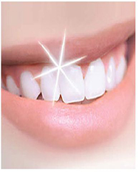

Sparkling White Teeth

Do
1. Rubbing the inside fibrous part of the peel, of a ripe banana, makes your teeth sparkle.
2. Juice of half a lemon when rubbed firmly but gently on the teeth removes yellow stains and tartar.
3. Strawberries are very good for whitening teeth. They can be rubbed on the teeth in pureed form or cut into halves and used.
4. For quick results dip your toothbrush in hydrogen peroxide and then gently brush the teeth.
5. Table salt may be used to rub stains off the teeth. Use fingertips for best results.
6. Use the inside of an orange peel to rub the teeth for good results.
7. Munching on crunchy fruits and vegetables like apples, carrots, cucumber, celery and parsley help in removing stains on teeth.
8. It is better to drink green tea or herbal tea as black tea does cause some staining on the teeth.
Don’t
1. Fizzy drinks peel away the tooth enamel due to the acids in them and make the teeth weak and yellowish.
2. Drugs like cocaine, ecstasy, etc, are not only bad for health but also have a telling affect on the teeth as they restrict blood flow to the gums and cause extensive gum damage.
3. Smoking is also a major don’t for dental health as well as for general health. Nicotine leaves a residue on teeth causing yellowish stains on them.
4. Dark colored juices, like cranberry juice, leave stains on teeth due to the pigment and sugar they contain. Drink such juices with a straw.
5. Black coffee is also a culprit against sparkling, white teeth.
6. Tomato sauce and balsamic vinegar are said to cause staining of teeth.
7. Red wine is said to stain the teeth as well as wear away tooth enamel. It is easiest to swish some plain water in the mouth while at parties.